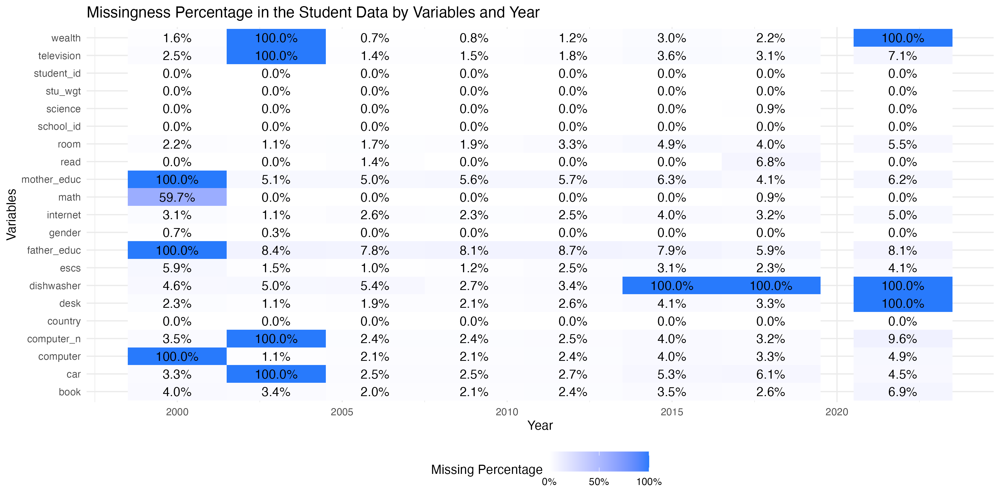

The goal of learningtower is to provide a user-friendly R package to provide easy access to a subset of variables from PISA data collected from the OECD. Version 1.1.0 of this package provides the data for the years 2000 - 2022. The survey data is published every three years. This is an excellent real world dataset for data exploring, data visualising and statistical computations.
What is the PISA dataset?

The Programme for International Student Assessment (PISA) is an international assessment measuring student performance in reading, mathematical and scientific literacy.
PISA assesses the extent to which 15-year-old students have acquired some of the knowledge and skills that are essential for full participation in society, and how well they are prepared for lifelong learning in the areas of reading, mathematical and scientific literacy.
In 2022, PISA involved 79 countries and 600,000+ students worldwide.
Read more about the Programme here.
Installation
You can install the learningtower package from CRAN with:
install.packages("learningtower")To install the development version of learningtower from GitHub use:
devtools::install_github("kevinwang09/learningtower")Data Description
The learningtower gives access to a subset of variables from PISA data originally collected and are available from OECD, collected on a three year basis.
The learningtower package contains mainly three datasets:
studentschoolcountrycode
This provides us with information about the students scores in mathematics, reading and science, their school details, and which country they are from. The data provided in this package is a cleaned version of the full published PISA organisation, with reproducible code available in this repository.
The number of entries for the student and school data are shown below.
| Year | Number of Students | Number of Schools |
|---|---|---|
| 2000 | 127,236 | 8,526 |
| 2003 | 276,165 | 10,274 |
| 2006 | 398,750 | 14,365 |
| 2009 | 515,958 | 18,641 |
| 2012 | 480,174 | 18,139 |
| 2015 | 519,334 | 17,908 |
| 2018 | 612,004 | 21,903 |
| 2022 | 613,744 | 21,629 |
Student Dataset
The student dataset comprises of the scores from the triennial testing of 15-year-olds worldwide. In addition, this dataset contains interesting information on their parents qualifications, family wealth, gender, and possession of computers, internet, cars, books, rooms, desks, and similar other variables.
The full dataset is approximately 50MB in size, which is much larger than the CRAN’s allowed package size limit. As the result, the package itself only includes a random 50 rows from the 38 OECD countries, for each of the survey years. i.e. student_subset_2000, student_subset_2003 etc.
The student subset dataset can be loaded easily. See ?student for detailed information on the measured variables.
library(learningtower)
data(student_subset_2018)
dim(student_subset_2018)
#> [1] 1900 22The entire student data can be downloaded using the load_student function.
#load the entire student data for a single year
student_data_2018 <- load_student(2018)
#load the entire student data for two of the years (2012, 2018)
student_data_2012_2018 <- load_student(c(2012, 2018))
#load the entire student data
student_data_all <- load_student("all")Note that because of changing data specification over the survery years, not all variables were measured consistently across the years.

School Dataset
The school dataset comprises school weight and other information such as the funding distribution of the schools, whether the school is private or public, the enrollment of boys and girls, the school size, and similar other characteristics of interest of different schools these 15-year-olds attend throughout the world.
- The school subset dataset can be loaded as follows
# loading the school data
data(school)See ?school for more information on the different variables present in the the school dataset.

Countrycode Dataset
The countrycode dataset contains mapping of the country ISO code to the country name. More information on the participating countries can be found here.
# loading the countrycode data
data(countrycode)
head(countrycode)
#> # A tibble: 6 × 2
#> country country_name
#> <chr> <chr>
#> 1 AZE Azerbaijan
#> 2 ARG Argentina
#> 3 AUS Australia
#> 4 AUT Austria
#> 5 BEL Belgium
#> 6 BRA BrazilNotes on countries
- Not all data entries in the
countrycodeare countries. For example, “QCN” refers to “Shanghai-China”.- Due to differences in country codes, not all
student_subset_yyyydata has all 38 OECD countries.
- Due to differences in country codes, not all
See ?countrycode for more detailed information on the countries that participated in the PISA experiment.
Exploring the data
In the plot shown below, shows the weighted mean of mathematics scores of these 15 year old students for a few selected countries over the available years.

Similarly, you can find more code examples and data visualizations for exploring
learningtowerthrough our vignettes and articlesFurther data exploration can be found in our articles exploring temporal trends here.
Citation
To cite the learningtower package, please use:
citation("learningtower")
#> To cite package 'learningtower' in publications use:
#>
#> Wang K, Yacobellis P, Siregar E, Romanes S, Fitter K, Dalla Riva G,
#> Cook D, Tierney N, Dingorkar P, Sai Subramanian S, Chen G (2024).
#> _learningtower: OECD PISA Datasets from 2000-2022 in an Easy-to-Use
#> Format_. R package version 1.1.0,
#> https://github.com/kevinwang09/learningtower,
#> <https://kevinwang09.github.io/learningtower/>.
#>
#> A BibTeX entry for LaTeX users is
#>
#> @Manual{,
#> title = {learningtower: OECD PISA Datasets from 2000-2022 in an Easy-to-Use Format},
#> author = {Kevin Wang and Paul Yacobellis and Erika Siregar and Sarah Romanes and Kim Fitter and Giulio Valentino {Dalla Riva} and Dianne Cook and Nick Tierney and Priya Dingorkar and Shabarish {Sai Subramanian} and Guan Ru Chen},
#> note = {R package version 1.1.0, https://github.com/kevinwang09/learningtower},
#> url = {https://kevinwang09.github.io/learningtower/},
#> year = {2024},
#> }Motivation for learningtower
- The PISA 2018 results were released on 3 December 2019. This led to wringing of hands in the Australian press, with titles of stories like Vital Signs: Australia’s slipping student scores will lead to greater income inequality and In China, Nicholas studied maths 20 hours a week. In Australia, it’s three.
Australia’s neighbours, New Zealand and Indonesia, are also worrying: New Zealand top-end in OECD’s latest PISA report but drop in achievements ‘worrying’, Not even mediocre? Indonesian students score low in math, reading, science: PISA report.
The data from this survey and all of the surveys conducted since the first collection in 2000, is publicly available. We decided to have made a more convenient subset of the data available in a new R package, called
learningtower
Acknowledgement
The work to make the data available is the effort of several researchers from Australia, New Zealand and Indonesia, conducted as part of the ROpenSci OzUnconf held in Sydney, Dec 11-13, 2019.